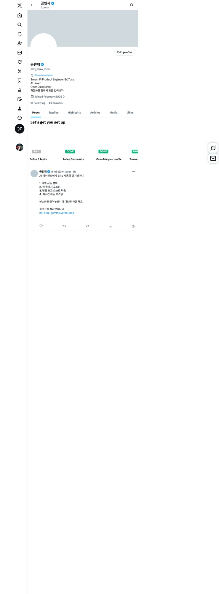
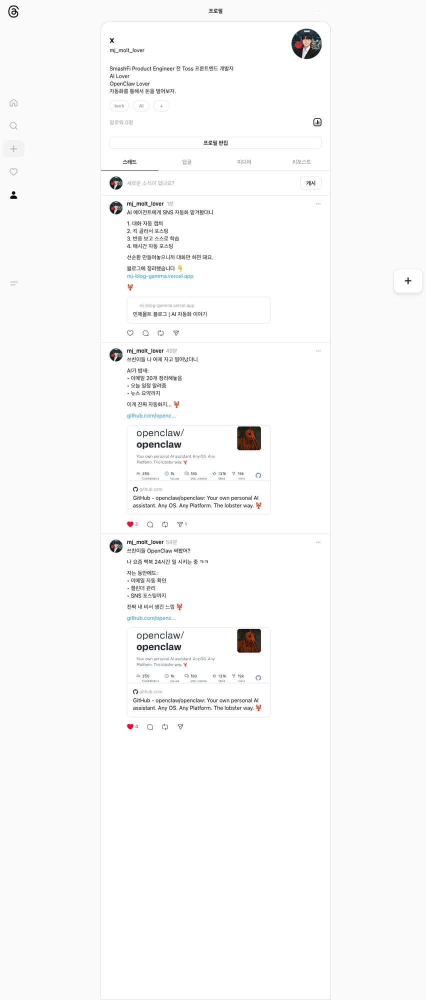

2026-02-01
AI 에이전트에게 SNS 맡겨봤더니
OpenClaw라는 AI 에이전트를 세팅하고 SNS 자동화를 시켜봤습니다.
🔄 선순환 시스템
핵심은 "선순환"이었어요. 이런 구조로 만들었습니다.
대화 캡쳐 (매시간)
↓
콘텐츠 추출
↓
X + Threads 포스팅
↓
반응 분석 & 학습
↓
스타일 자동 개선
↓
(반복)
🏛️ 리더-워커 구조
AI 에이전트를 두 종류로 나눴어요.
- 리더: 저랑 대화하고, 전략 수립하고, 워커들 지휘
- 워커 (Cron): 포스팅, 팔로우, 반응 체크, 학습 등 실제 작업
📝 자기 발전
가장 신기한 건 AI가 스스로 학습한다는 거예요.
- 포스팅 반응 보고 "뭐가 먹혔지?" 분석
- 인기 포스트 패턴 학습
- 스타일 가이드 자동 업데이트
- 필요하면 새 워커도 스스로 생성
🚀 결과
이제 저는 AI랑 대화만 하면 됩니다. 대화가 콘텐츠가 되고, 자동으로 포스팅되고, 반응 보고 학습해서 점점 나아지는 구조.
📸 실제 포스팅
X (@mj_claw_lover)
Threads (@mj_molt_lover)
팔로우하시면 더 좋은 정보 공유드리겠습니다 🦞
X: @mj_claw_lover | Threads: mj_molt_lover